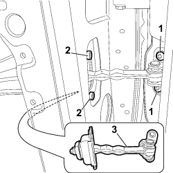
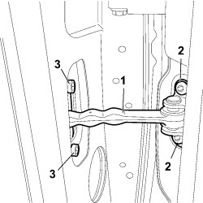

7010A28 REAR SIDE DOOR OPENING LIMITER - R.R
- Path
- Procedures > 70 FITTINGS > 7010 PASSENGER COMPARTMENT REAR SIDE DOORS > 7010A REAR SIDE DOOR ASSEMBLY > 7010A28 REAR SIDE DOOR OPENING LIMITER - R.R
- Kind
- repair procedure (removal / refitting; the operation number is the code)
- Applies to
- all engines; all production periods
- Interactive page
- https://sloeber94.github.io/elrnDB-fCrm/en/#/194000896
Applies to: all engines; all production periods
 Removing
Removing
 Refitting
Refitting- Open the rear side door.
- Completely lower the window.
- Turn the ignition key to the OFF position.
- Disconnect the negative battery terminal.
Description | Connector | |
|---|---|---|
BATTERY |
Op. 7010E14 TOP COVER OF REAR SIDE DOOR INNER PANEL - R R OR REPLACE
Op. 7010M10 REAR SIDE DOOR ELECTRICALLY OPERATED WINDOW SWITCH (ONE), LEFT OR RIGHT - R.R
Op. 7010E10 REAR SIDE DOOR INNER PANEL - R.R. OR REPLACE
Op. 7010A08 REAR SIDE DOOR INTERIOR SUPPORT FRAME - R.R. WITH DOOR PANEL REMOVED
1. Undo the retaining bolts on the bodyshell.
2. Undo the retaining bolts on the door.
3. Remove the check strap extracting it from the inside of the door frame.

Applies to: all engines; all production periods
Refitting
Removing- Check that the check strap is not damaged.
1. Fit the check strap in position.
2. Screw in and tighten the bolts fixing the check strap to the bodyshell to torque.
Component | Fastening | dia | Value (daNm) | Validity |
|---|---|---|---|---|
FRONT AND REAR DOOR STRIKER WITH OUTER PANEL AND INTERMEDIATE PILLAR REINFORCEMENT | Bolt | M8 | 2,88 ÷ 3,52 |
3. Screw in and tighten the bolts fixing the check strap to the door to torque.
Component | Fastening | dia | Value (daNm) | Validity |
|---|---|---|---|---|
FRONT AND REAR DOOR STRIKER WITH OUTER PANEL AND INTERMEDIATE PILLAR REINFORCEMENT | Bolt | M8 | 2,88 ÷ 3,52 |

Applies to: all engines; all production periods
Op. 7010A08 REAR SIDE DOOR INTERIOR SUPPORT FRAME - R.R. WITH DOOR PANEL REMOVED
Op. 7010E10 REAR SIDE DOOR INNER PANEL - R.R. OR REPLACE
Op. 7010M10 REAR SIDE DOOR ELECTRICALLY OPERATED WINDOW SWITCH (ONE), LEFT OR RIGHT - R.R
Op. 7010E14 TOP COVER OF REAR SIDE DOOR INNER PANEL - R R OR REPLACE
- Connect the negative battery terminal.
Description | Connector | |
|---|---|---|
BATTERY |
Topics linked from this page (5)
- 7010A08 REAR SIDE DOOR INTERIOR SUPPORT FRAME - R.R. WITH DOOR PANEL REMOVED
- 7010E10 REAR SIDE DOOR INNER PANEL - R.R. OR REPLACE
- 7010E14 TOP COVER OF REAR SIDE DOOR INNER PANEL - R R OR REPLACE
- 7010M10 REAR SIDE DOOR ELECTRICALLY OPERATED WINDOW SWITCH (ONE), LEFT OR RIGHT - R.R
- A001 BATTERY